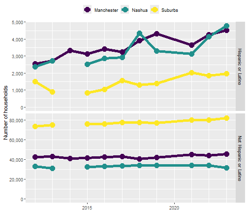

Installation
You can install the development version from GitHub with:
# install.packages("devtools")
devtools::install_github("higherX4Racine/hercacstables")Motivation
The American Community Survey (ACS) from the US Census’s website returns data in a weirdly idiosyncratic way. There are many subtotals in each table. Grouping variables are organized in a tree-like, rather than tabular fashion. This package is intended to make it easy to access and use the ACS data with R.
Many questions that work with Census data follow a common pattern:
How did [measurement] differ among [demographic groups] and across [geographic levels] in [geographic area] during [span of time]?
A Measurement is any of the huge number of things that the Census keeps track of. Measurements are arranged in tables (called “groups”) and rows. If you were drawing maps, this would be what determines the color of each area. Examples include population size (table B01001 and others), median household income (table B19013 and others), types of computers in a household (table B28001), number of vehicles used while commuting (table B08015).
A Demographic Group is a subset of the population that shares specific traits. Demographic groups can be represented either by groups (common when reporting by race or ethnicity) or rows (most other cases, like age, sex, or veteran status). If you were drawing maps, you would probably have a different version of each map for each demographic grouping. Examples include the number of Hispanic girls under 5 years old (table B01001I, row 18), the median income of Asian American households (table B19013D, row 1), the number of households with no computer (table B28001, row 11), the number of vehicles used by women while commuting (table B08015, row 3).
A Geographic Level is a Census-defined hierarchy from the whole country to small blocks. The level that you are interested in is determined by the scale of your question. If you were drawing maps, these would be the areas that appeared as different colors. Examples include congressional districts, incorporated cities, school districts, and Census tracts.
A Geographic Area is a set of specific instances of one or more geographic levels. This is the full geographic scope of your question. If you were drawing maps, this would determine their scale. Examples include whole states, metropolitan areas, Census-designated places, and counties.
The workflow
- Identify the groups and rows that contain the data you need
- Use
hercacstables::METADATA_ACS5for this! - Create a lookup table that maps from the Census variable name to your variables.
- You may need several if you are pulling data from several groups.
- Use
- Define the geographies that you will use
- Use
hercacstables::METADATA_ACS5for this, too! - You need to know at least two levels of geography:
- The one that you want to pull data for, your level of interest
- This is often small, like tract or county subdivision.
- Any and all levels that contain your level of interest
- These will be larger, like state or county.
- The one that you want to pull data for, your level of interest
- Create a lookup table that maps from geographic ids to meaningful names.
- Use
- Write fetching functions that call
hercacstables::fetch_data- they will often always use the same variables (from step 1)
- they may need to be parameterized by geography if you’re pulling from multiple levels
- they should always be parameterized by year so that you can reuse them
- Write wrangling functions that for turning fetched tables into useful ones.
- These will probably involve using
dplyr::inner_joinbetween the fetched data and your lookup tables. - You can also perform calculations like aggregating or finding remainders.
- These will probably involve using
- Run the workflow in two stages.
- Use
purrr::mapandpurrr::list_rbindto download all of the data into one data frame.- Cache that result because API calls are slow
- Run the wrangling functions.
- Save these results with, e.g.
base::saveRDS.
- Save these results with, e.g.
- Use
Example
Let’s say you want to ask this question:
How did [the number of households] differ between [Hispanic and non-Hispanic people] and across [Manchester, Nashua, and suburban areas] in [Hillsborough County, NH] during [the last 10 years]?
find the measurement and demographic groups
First, find the variables that describe the numbers of households. One way to do this is to search hercacstables::METADATA_ACS5 for groups whose “Universe” is “Households” and whose “Description” contains “Hispanic” or “Ethnicity.” A group’s “Universe” describes what it is measuring, often telling you the units of whatever its values are. A group’s “Description” is a phrase that summarizes what it reports.
hercacstables::METADATA_ACS5 |>
purrr::pluck("groups") |>
dplyr::filter(stringr::str_detect(.data$Universe, "Household"),
stringr::str_detect(.data$Description, "Hispanic|Ethnic")) |>
knitr::kable()| Group | Description | Universe |
|---|---|---|
| B11001H | Household Type (Including Living Alone) (White Alone, Not Hispanic or Latino) | Households with a householder who is White alone, not Hispanic or Latino |
| B11001I | Household Type (Including Living Alone) (Hispanic or Latino) | Households with a householder who is Hispanic or Latino |
| B19001H | Household Income in the Past 12 Months (in 2022 Inflation-Adjusted Dollars) (White Alone, Not Hispanic or Latino Householder) | Households with a householder who is White alone, not Hispanic or Latino |
| B19001I | Household Income in the Past 12 Months (in 2022 Inflation-Adjusted Dollars) (Hispanic or Latino Householder) | Households with a householder who is Hispanic or Latino |
| B19013H | Median Household Income in the Past 12 Months (in 2022 Inflation-Adjusted Dollars) (White Alone, Not Hispanic or Latino Householder) | Households with a householder who is White alone, not Hispanic or Latino |
| B19013I | Median Household Income in the Past 12 Months (in 2022 Inflation-Adjusted Dollars) (Hispanic or Latino Householder) | Households with a householder who is Hispanic or Latino |
| B19025H | Aggregate Household Income in the Past 12 Months (in 2022 Inflation-Adjusted Dollars) (White Alone, Not Hispanic or Latino Householder) | Households with a householder who is White alone, not Hispanic or Latino |
| B19025I | Aggregate Household Income in the Past 12 Months (in 2022 Inflation-Adjusted Dollars) (Hispanic or Latino Householder) | Households with a householder who is Hispanic or Latino |
| B19037H | Age of Householder by Household Income in the Past 12 Months (in 2022 Inflation-Adjusted Dollars) (White Alone, Not Hispanic or Latino Householder) | Households with a householder who is White alone, not Hispanic or Latino |
| B19037I | Age of Householder by Household Income in the Past 12 Months (in 2022 Inflation-Adjusted Dollars) (Hispanic or Latino Householder) | Households with a householder who is Hispanic or Latino |
| B22005H | Receipt of Food Stamps/SNAP in the Past 12 Months by Race of Householder (White Alone, Not Hispanic or Latino) | Households with a householder who is White alone, not Hispanic or Latino |
| B22005I | Receipt of Food Stamps/SNAP in the Past 12 Months by Race of Householder (Hispanic or Latino) | Households with a householder who is Hispanic or Latino |
It looks like our best bet is group “B11001I.” It is likely that group “B11001” contains counts of households of any race. The first row of most groups is the total value across any demographic subset that it keeps track of. Since our question does not ask about different household types, we probably just need row one from groups “B11001” and “B11001I.” This gives us a good opportunity to document the ethnicities counted in each.
HOUSEHOLD_GROUPS <- c("B11001", "B11001I")
household_variables <- hercacstables::METADATA_ACS5 |>
purrr::pluck("variables") |>
dplyr::filter(.data$Group %in% HOUSEHOLD_GROUPS,
.data$Index == 1) |>
dplyr::mutate(
Ethnicity = dplyr::case_match(.data$Group,
"B11001" ~ "All",
"B11001I" ~ "Hispanic or Latino")
) |>
dplyr::select("Group", "Index", "Variable", "Ethnicity")
knitr::kable(household_variables,
align = c("lrll"))| Group | Index | Variable | Ethnicity |
|---|---|---|---|
| B11001I | 1 | B11001I_001E | Hispanic or Latino |
| B11001 | 1 | B11001_001E | All |
find the geographic levels and geographic area
The next step is to find the codes that are related to the geographic areas and levels. We need to know the FIPS code for the state, county, and two cities. We also need to know that the geographic level that we’re working with is “county subdivision.” As the last part of this step, we define a lookup table to translate from the FIPS codes for the different geographies to a human-readable name.
NEW_HAMPSHIRE <- "33"
COUNTY_LEVEL <- "county"
HILLSBOROUGH_CO <- "011"
CITY_LEVEL <- "county subdivision"
MANCHESTER_NH <- "45140"
NASHUA_NH <- "50260"
geography_definitions <- tibble::tribble(
~ FIPS, ~ Location,
HILLSBOROUGH_CO, "County-wide",
MANCHESTER_NH, "Manchester",
NASHUA_NH, "Nashua"
)
geography_definitions |>
knitr::kable()| FIPS | Location |
|---|---|
| 011 | County-wide |
| 45140 | Manchester |
| 50260 | Nashua |
find the time interval
The last ten years available from the Census are, as of 2024-09-13, 2012 through 2022. We can use 1-year estimates for our question because we are dealing with geographic levels that have more than 50,000 people in them. That gives us more year-to-year precision, although it does mean that we have to exclude 2020. There are no 1-year ACS estimates for 2020 because of the COVID-19 pandemic.
YEARS_INCLUDED <- c(2012:2019, 2021:2022)define functions that use the API
We will need to make multiple calls to the API, so it makes sense to create some reusable functions. We need two calls per year. The first one will pull the county-wide household counts. The second one will pull the household counts for each city. Each function should have “year” as its argument so that we can reuse it.
generalized_fetch_data <- function(.year, .level, .areas, ...) {
hercacstables::fetch_data(
variables = household_variables$Variable,
year = .year,
survey_type = "acs",
table_or_survey_code = "acs1",
for_geo = .level,
for_items = .areas,
state = NEW_HAMPSHIRE,
...
)
}
fetch_county_households <- function(.year){
generalized_fetch_data(.year,
"county",
HILLSBOROUGH_CO)
}
fetch_city_households <- function(.year){
generalized_fetch_data(.year,
CITY_LEVEL,
c(MANCHESTER_NH,
NASHUA_NH),
county = HILLSBOROUGH_CO)
}
fetch_example_data <- function(.year) {
dplyr::bind_rows(
fetch_county_households(.year),
fetch_city_households(.year)
)
}fetch the data
This is where hercacstables starts to come into its own. We define the fetching process as few times as possible, just tweaking it for related cases. This leads to a lot of code reuse and efficiency, especially for reports that you just need to update once a year.
raw_households <- YEARS_INCLUDED |>
purrr::map(fetch_example_data) |>
purrr::list_rbind()
raw_households |>
dplyr::filter(.data$Year == 2022) |>
dplyr::mutate(
dplyr::across(c("Value"),
scales::label_comma(accuracy = 1))
) |>
knitr::kable(
align = "lllrrrl"
)| state | county | Group | Index | Value | Year | county subdivision |
|---|---|---|---|---|---|---|
| 33 | 011 | B11001I | 1 | 10,250 | 2022 | NA |
| 33 | 011 | B11001 | 1 | 167,816 | 2022 | NA |
| 33 | 011 | B11001I | 1 | 4,251 | 2022 | 45140 |
| 33 | 011 | B11001 | 1 | 48,068 | 2022 | 45140 |
| 33 | 011 | B11001I | 1 | 4,155 | 2022 | 50260 |
| 33 | 011 | B11001 | 1 | 38,017 | 2022 | 50260 |
wrangle the data
The raw data are not very usable. Several of the columns still have codes, rather than human-readable values. The value column also does not explicitly state values for the suburban or for non-Hispanic folks. The “wrangling” process is where we addressing these drawbacks.
map codes to words
We should get rid of the columns that are Census database codes and create columns about location and demographics that have human-readable values.
households <- raw_households |>
dplyr::inner_join(
household_variables,
by = c("Group", "Index")
) |>
dplyr::mutate(
FIPS = dplyr::coalesce(.data$`county subdivision`,
.data$county)
) |>
dplyr::inner_join(
geography_definitions,
by = "FIPS"
) |>
dplyr::select(
"Location",
"Year",
"Ethnicity",
Households = "Value"
)
households |>
dplyr::filter(.data$Year == 2022) |>
dplyr::mutate(
dplyr::across(c("Households"),
scales::label_comma(accuracy = 1))
) |>
knitr::kable(
align = "rllr"
)| Location | Year | Ethnicity | Households |
|---|---|---|---|
| County-wide | 2022 | Hispanic or Latino | 10,250 |
| County-wide | 2022 | All | 167,816 |
| Manchester | 2022 | Hispanic or Latino | 4,251 |
| Manchester | 2022 | All | 48,068 |
| Nashua | 2022 | Hispanic or Latino | 4,155 |
| Nashua | 2022 | All | 38,017 |
compute implicit values
Now that the columns are human-readable, we can compute the values that we are actually interested in. That computation involves subtracting either the cities’ households from the county’s, or the number of Hispanic households from the total number of households. This task turns up very frequently when dealing with Census data, so the package includes a helper function to do it for you: hercacstables::subtract_parts_from_whole. That function does not remove the rows that contain the all-groups category. In our case, we must remove them so all of the calculations come out correctly.
households <- households |>
hercacstables::subtract_parts_from_whole(
grouping_column = "Location",
value_column = "Households",
whole_name = "County-wide",
part_names = c("Manchester", "Nashua"),
remainder_name = "Suburbs"
) |>
dplyr::select(
!"County-wide"
) |>
hercacstables::subtract_parts_from_whole(
grouping_column = "Ethnicity",
value_column = "Households",
whole_name = "All",
part_names = "Hispanic or Latino",
remainder_name = "Not Hispanic or Latino"
) |>
dplyr::select(
!"All"
)
households |>
dplyr::filter(.data$Year == 2022) |>
dplyr::mutate(
dplyr::across(c("Households"),
scales::label_comma(accuracy = 1))
) |>
knitr::kable(
align = "rllr"
)| Year | Location | Ethnicity | Households |
|---|---|---|---|
| 2022 | Manchester | Hispanic or Latino | 4,251 |
| 2022 | Manchester | Not Hispanic or Latino | 43,817 |
| 2022 | Nashua | Hispanic or Latino | 4,155 |
| 2022 | Nashua | Not Hispanic or Latino | 33,862 |
| 2022 | Suburbs | Hispanic or Latino | 1,844 |
| 2022 | Suburbs | Not Hispanic or Latino | 79,887 |
Answer the question
Now we can finally look at trends in number of households in Hillsborough County, NH, comparing between Hispanic and non-Hispanic households among Manchester, Nashua, and the suburbs.
visualize
The first step is to make some graphs. These data are 4-dimensional because they involve time, location, ethnicity, and number of households. That means we’ll need more than one graph. It looked from the tables above that the number of Hispanic households is much lower than non-Hispanic households in all three locations. Let’s make a two-panel graph, where each panel shows one ethnicity. That way they can have separate y axes. Both graphs will have time on the x-axis, number of households on the y, and designate location with the color of points and lines.
households |>
ggplot2::ggplot(
ggplot2::aes(
x = .data$Year,
y = .data$Households,
color = .data$Location,
group = .data$Location
)
) +
ggplot2::geom_line(
linewidth = 2
) +
ggplot2::geom_point(
size = 5
) +
ggplot2::scale_x_continuous(
name = NULL,
breaks = scales::breaks_width(5),
minor_breaks = scales::breaks_width(1)
) +
ggplot2::scale_y_continuous(
name = "Number of households",
limits = c(0, NA),
labels = scales::label_comma(accuracy = 1)
) +
ggplot2::scale_color_viridis_d(
name = NULL,
guide = ggplot2::guide_legend(position = "top")
) +
ggplot2::facet_grid(
rows = ggplot2::vars(.data$Ethnicity),
scales = "free_y"
)
It looks like the number of households is growing, with non-Hispanic households increasing in the suburbs and Hispanic households increasing in the cities.
analyze
Let’s test this with an ANCOVA. We’ll subtract 2012 from the year so that the intercept estimate gives us the value in 2012, not AD 0.
household_model <- households |>
dplyr::mutate(
Year = .data$Year - 2012,
Location = factor(.data$Location,
levels = c("Suburbs",
"Manchester",
"Nashua")),
Ethnicity = factor(.data$Ethnicity,
levels = c("Not Hispanic or Latino",
"Hispanic or Latino"))
) |>
lm(Households ~ Year * Ethnicity * Location,
data = _)I always like to look at the ANOVA table first to get a 10,000 meter view before I try to interpret specific parameters.
household_model |>
anova() |>
broom::tidy() |>
dplyr::mutate(
dplyr::across(c("sumsq",
"meansq"),
scales::label_comma(accuracy = 1)),
dplyr::across("statistic",
\(.) signif(., 4)),
dplyr::across("p.value",
\(.) round(., 4))
) |>
knitr::kable(
align = "lrrrrr"
)| term | df | sumsq | meansq | statistic | p.value |
|---|---|---|---|---|---|
| Year | 1 | 42,871,954 | 42,871,954 | 83.890 | 0.0000 |
| Ethnicity | 1 | 32,103,588,465 | 32,103,588,465 | 62820.000 | 0.0000 |
| Location | 2 | 4,375,353,354 | 2,187,676,677 | 4281.000 | 0.0000 |
| Year:Ethnicity | 1 | 13,470,367 | 13,470,367 | 26.360 | 0.0000 |
| Year:Location | 2 | 4,035,620 | 2,017,810 | 3.948 | 0.0265 |
| Ethnicity:Location | 2 | 5,270,922,505 | 2,635,461,253 | 5157.000 | 0.0000 |
| Year:Ethnicity:Location | 2 | 7,717,340 | 3,858,670 | 7.551 | 0.0015 |
| Residuals | 44 | 22,485,689 | 511,038 | NA | NA |
It looks like EVERYTHING is significant, so let’s look at all of the parameters that were in the near-significant range.
household_model |>
broom::tidy() |>
dplyr::filter(
.data$`p.value` < 0.1
) |>
dplyr::mutate(
dplyr::across(c("estimate",
"std.error",
"statistic"),
\(.) signif(., 4)),
dplyr::across("p.value",
\(.) round(., 4))
) |>
knitr::kable(
align = "lrrrr"
)| term | estimate | std.error | statistic | p.value |
|---|---|---|---|---|
| (Intercept) | 73790.0 | 442.30 | 166.800 | 0.0000 |
| Year | 632.6 | 74.53 | 8.488 | 0.0000 |
| EthnicityHispanic or Latino | -72830.0 | 625.50 | -116.400 | 0.0000 |
| LocationManchester | -32160.0 | 599.60 | -53.630 | 0.0000 |
| LocationNashua | -41770.0 | 625.50 | -66.770 | 0.0000 |
| Year:EthnicityHispanic or Latino | -550.1 | 105.40 | -5.219 | 0.0000 |
| Year:LocationManchester | -449.6 | 103.20 | -4.355 | 0.0001 |
| Year:LocationNashua | -402.7 | 105.40 | -3.821 | 0.0004 |
| EthnicityHispanic or Latino:LocationManchester | 33920.0 | 848.00 | 40.000 | 0.0000 |
| EthnicityHispanic or Latino:LocationNashua | 43220.0 | 884.60 | 48.850 | 0.0000 |
| Year:EthnicityHispanic or Latino:LocationManchester | 521.9 | 146.00 | 3.575 | 0.0009 |
| Year:EthnicityHispanic or Latino:LocationNashua | 467.4 | 149.10 | 3.135 | 0.0031 |
summarize
The number of households in Hillsborough county overall grew from 2012-2022. The number of Hispanic households was much higher in the two cities than in the suburban parts of the county. This difference became more pronounced over the decade, for two reasons. The number of Hispanic households grew more quickly in Nashua and Manchester than in the suburban areas. The number of non-Hispanic households grew more quickly in the suburbs than in the cities. Isn’t it nice when the visual patterns are corroborated by significant statistics?